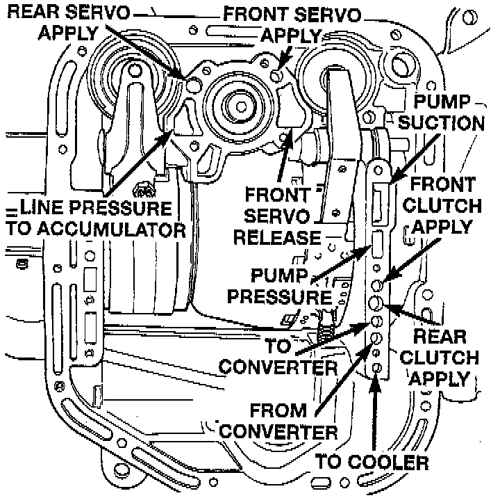

Air Pressure Tests

GENERAL INFORMATION
Air-pressure testing can be used to check transmission front/rear clutch and band operation. The test can be conducted with the transmission either in the vehicle or on the work bench, as a final check, after overhaul.
Air-pressure testing requires that the oil pan and valve body be removed from the transmission. The servo and clutch apply passages are shown.
Front Clutch Air Test
Place one or two fingers on the clutch housing and apply air pressure through front clutch apply passage. Piston movement can be felt and a soft thump heard as the clutch applies.
Rear Clutch Air Test
Place one or two fingers on the clutch housing and apply air pressure through rear clutch apply passage. Piston movement can be felt and a soft thump heard as the clutch applies.
Front Servo Air Test
Apply air pressure to the front servo apply passage. The servo rod should extend and cause the band to tighten around the drum. Spring pressure should release the servo when air pressure is removed.
Rear Servo Air Test
Apply air pressure to the rear servo apply passage. The servo rod should extend and cause the band to tighten around the drum. Spring pressure should release the servo when air pressure is removed.